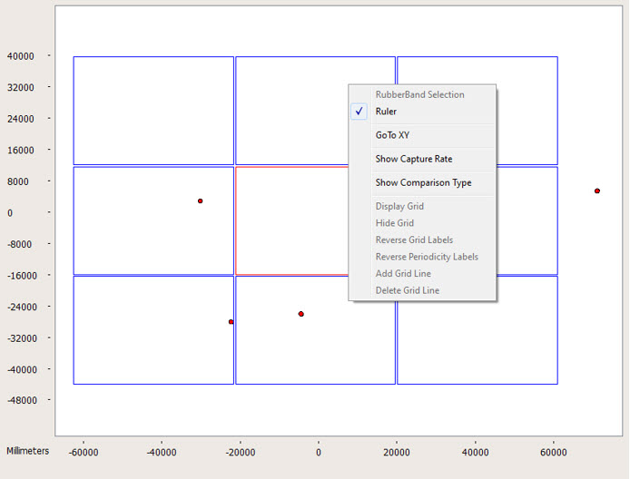
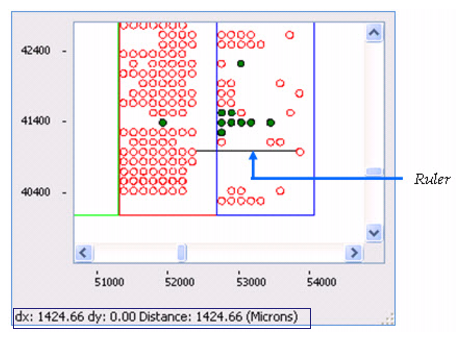

Distances between
defects can be measured using the Ruler feature in the Defect Map
window.
Procedure
- Right-click in any empty area
of the Defect Map display area to invoke the popup menu.
- Select Ruler. Once enabled, a check
mark appears next to it.
Figure 1. Ruler Option Enabled
Note: If
the Ruler mode is enabled, Center Around mode is deactivated.
- To measure the distance between
two points in the Defect Map window:
- Click and hold a point in
the Defect Map window to indicate where you want to start measurement.
- Drag a line to the end point.
Results
The measured distance between start
point and end point is displayed in the status bar of the Defect
Map. Figure 2 illustrates an example ruler measurement.
Figure 2. Ruler Measurement Example
In Figure 2, the measurement is displayed as:
dx:1424.66 dy:0.00 Distance: 1424.66 (Microns)
The distance is displayed in units
specified in the dat-ini.xml file.